Meet the Characters
The world of CornShark is inhabited by three types of characters:
"Regular" Fish
"Regular" Fish |
|
|
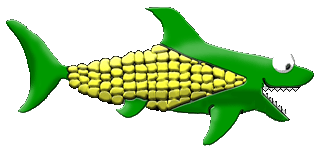
CornShark |
|
|
Our hero -- a plant/animal hybrid sea creature who wishes only to become the biggest fish in the sea, using his innate gift of gluttony to eat as much as possible. |
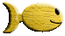
Crackerfishy |
|
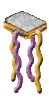
Peebee Jellyfish |
Common and relatively harmless, this "small fry" is anchored firmly at the bottom of the food chain...which is why they make such effective bait for the fishermen. |
|
The most aggressive fish of all, two-thirds of the Peebee Jellyfish's body is made up of its long, deadly tentacles. Only its soft, squishy head is edible, so it's best to approach them from above. |
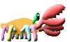
Sherbet Crab |
| 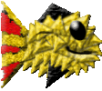 Chipsen Fish |
Sherbet Crabs are bottom dwellers with just enough of a vertical leap to make them a threat to the deepest diving denizens. If you don't keep them cleared out, they will overpopulate and then removal becomes dangerous and difficult. There is definitely strength in numbers for these little guys. |
|
With its tendency toward being average in every way, the Chipsen Fish is an easy, satisfying, crunchy treat for fish of nearly any level. |
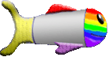
Rainbow Slush Trout |
|
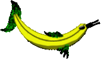
Bananacuda |
This cold-blooded killer is generally a pretty average fish, but its relatively low profile can make the Rainbow Slush Trout a difficult target at times. |
|
Don't let its comical appearance and thin body fool you -- the Bananacuda is a dangerous foe. It moves rapidly, turns without warning, and puts up an admirable fight when you try to take it down. |
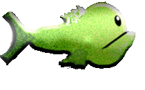
Pearahna |
|
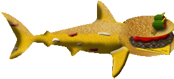
Hamburgerhead Shark |
Slow, bulky, and loaded with sharp teeth, the Pearahna is a moderately challenging opponent. They may be easy to catch, but their large mouths can be hard to avoid. |
|
The long, streamlined body of the Hamburgerhead Shark gives it a decent speed advantage while also providing a wide target from the top and bottom. Beware its deceptively soft-looking mouth -- this burger will take a bite out of you! |
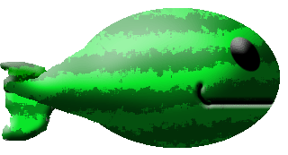
Whalemelon |
|
Even for the toughest of predators, it takes several bites to get through the thick rind of the Whalemelon, but the juicy, nutritious insides make it well worth the effort. Just avoid that gaping maw; the Whalemelon can swallow small fish whole. |
|
Power-ups |
|
Eating a power-up will provide some form of enhancement to the player character. Except for the Sharkcut's instant level-up, all power-up effects are temporary. Only one power-up can be present at any time. Therefore, if you want a different power-up, you must eat the existing one first. | |
|
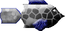
Shellfish |
|
|
This shield-shaped, jawbreaker-like fish provides the CornShark with temporary invincibility. |
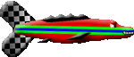
Striped Racer |
Phatfish |
If you can catch one, this speed demon will provide a temporary and extreme boost of speed. |
|
The Phatfish is the greedy hunter's delicacy of choice. For a limited time, all point values are doubled. |
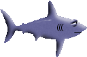
Sharkcut |
|
A lazy fish for lazy players, the Sharkcut provides an instant level-up. |
|
Hazards |
|
|
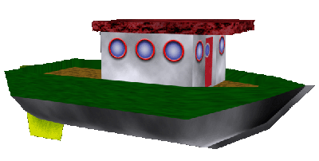
Fishing Boat |
|
|
Fishermen are a constant threat to creatures of the sea. Around these parts, Crackerfishies are the bait of choice. Beware! |
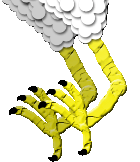
Sea Chicken |
|
Ever wonder about the phrase "chicken of the sea"? As it turns out, Sea Chickens are gigantic and ferocious raptors that dip beneath the waves trying to grab a snack with their deadly chicken talons. |
|